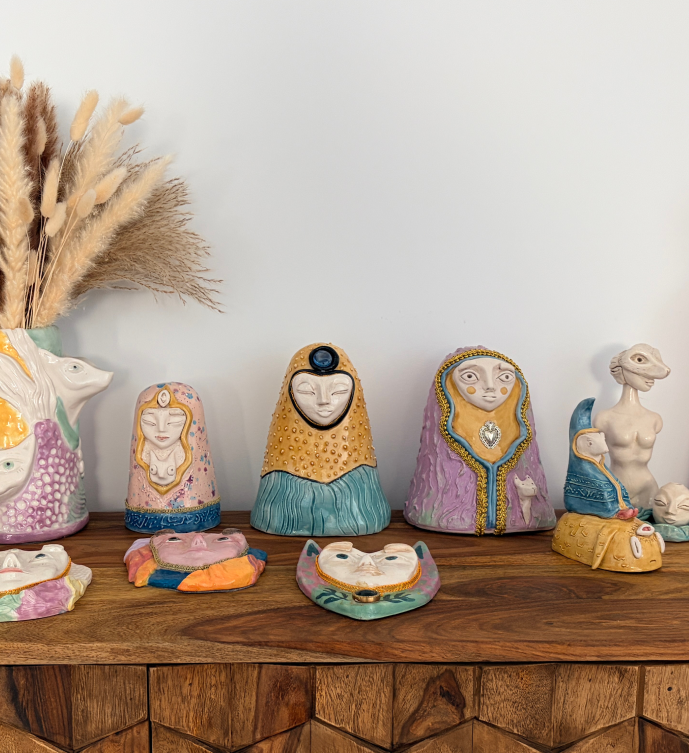

I believe art is a bridge between the conscious and the unconscious, between what we can and cannot name. A space where the functional meets desire, a place where our energy begins to move, to transform.
Every time I put my hands to work, an inner dialogue opens up. I don’t always know what I’m looking for, nor could I explain in words what happens as I create. It is a more diffuse, more expansive kind of dialogue, one that doesn’t need to follow a logic or reach a conclusion. Sometimes, it is only when something takes shape outside of me that what I was searching for begins to reveal itself.
And yet, there is something I resist losing in that passage. When I write about a piece, I feel I risk closing off its meaning, fixing in words something that remained alive and in motion when there is nothing said about it. As if explaining one part of that inner dialogue could leave out everything it might have been, everything I still don’t understand and that remains beyond the reach of explanation. The work is reduced to an answer, when in reality, it remains a question.
And at the same time, it is precisely this attempt to explain that sets everything in motion again. By bringing the work into the world, by making a part of my own journey visible, I encounter new layers of meaning that I haven’t reached.
I’m beginning to think that art is not necessarily about finding answers, but about creating the conditions for something to reveal itself. Only a non-ordinary process, a non-ordinary piece can act as a wake up call, can create a different way of being present. First, for the person who creates; then, perhaps, for the person who encounters the work and recognizes something of their own in it.
Stefania Spangenberg
